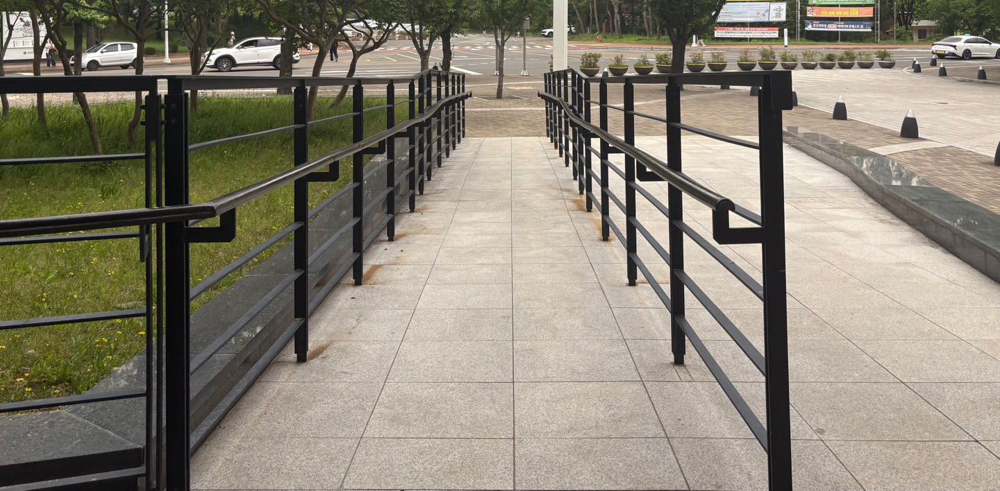

램프
의미
장소
요소
사건

램프(ramp)는 건축이나 도시공간에서 쓰이는 경사로로, 높이가 다른 두 지점을 부드럽게 이어주는 평면으로 이루어져 있습니다.
램프의 기능
1. 장애인,노약자,유아차 이용자 등이 계단 없이 이동 가능하게 합니다.
2. 무거운 물건,장비 등을 끌고 이동할 때 계단보다 쉽게 도움을 줍니다.
3. 공간의 흐름,형태,접근성을 조직하는 건축적 장치입니다.